A Origem dos Mundos
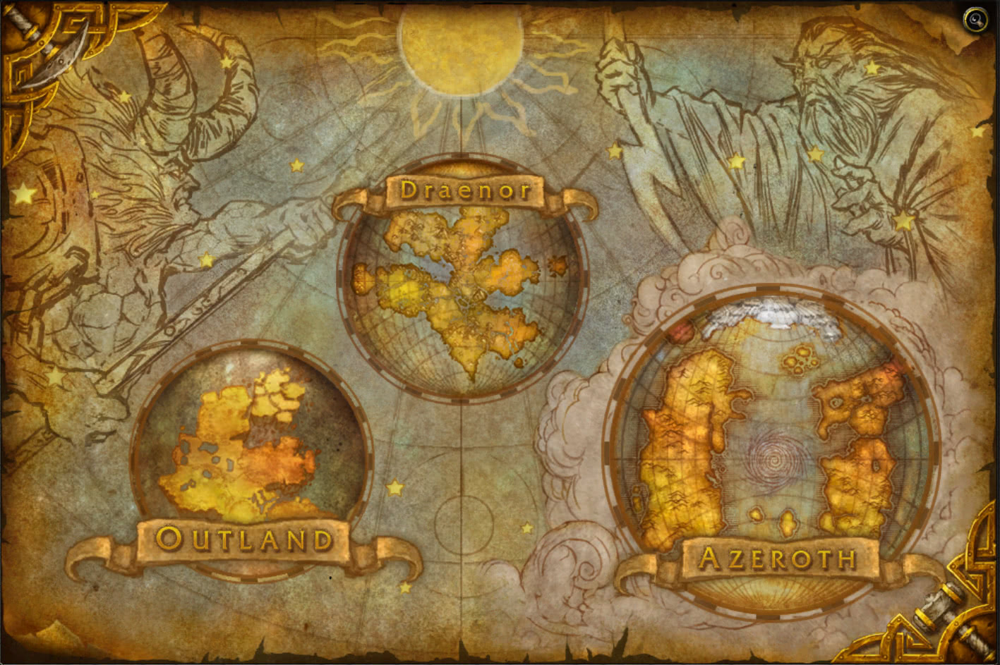Ninguém sabe exatamente como o universo começou. Alguns teorizam que uma explosão cósmica catastrófica espalhou as jóias do infinito nos mundos na imensidão da Grande Escuridão – mundos que um dia teriam formas de vida maravilhosas e fofas. Outros acreditam que o universo foi criado por uma única entidade todo-poderosa. Embora as origens exatas do universo caótico permaneçam incertas, está claro que uma raça de seres poderosos surgiu para trazer estabilidade a esses vários mundos e assegurar um futuro seguro para os seres que seguissem seus passos. Os titãs, deuses colossais que tinham a pele metálica, dos cantos distantes do cosmo, exploraram o universo recém nascido e se fixaram nos planos encontrados para trabalhar nele. Eles moldaram os mundos elevando imponentes montanhas e cavando vastos oceanos. Espiraram céus e criaram atmosferas. Tudo partindo de um plano, criar ordem a partir do caos. Eles deram poder a raças primitivas para cuidar e manter a integridade dos seus respectivos planos. Comandado pela elite conhecida como o Panteão, os titãs trouxeram ordem a cem milhões de mundos espalhados ao longo da Grande Escuridão do Além durante os primeiros anos de criação. O benevolente Panteão que buscava proteger estes mundos estruturados, sempre estava vigilante contra a ameaça de ataque das entidades extra-dimensionais vis da Espiral Etérea. O Caos Inferior, uma dimensão etérea de magias caóticas que conectada a inúmeros mundos do universo, era lar de um número infinito de seres malignos que só buscavam destruir a vida e devorar as energias vivas do universo. Incapazes de conceber o mal em qualquer forma, os titãs tentaram achar um modo de terminar com a constante ameaça dos demônios.
Apesar de ser extremamente suportada por todos, e até aceita como oficial, dependendo de sua imersão in-game, há a teoria dos taurens, que o mundo foi criado pela Mãe-Terra e ainda o outro mito de que os mundos foram criados pelos Deuses Antigos, e logo após de certa forma, destruídos pelos Titãs.
O Conto de Sargeras
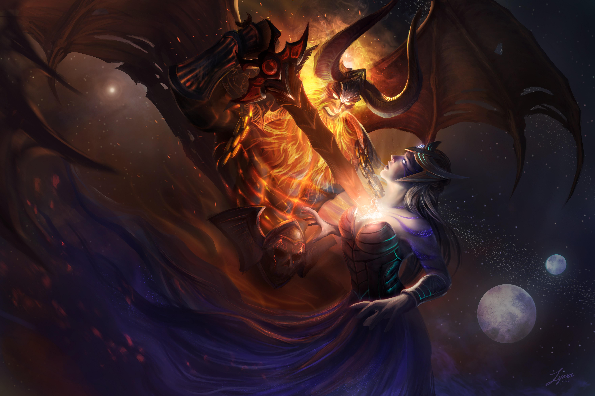Com o passar do tempo, entidades demoníacas do Caos Inferior fizeram seu espaço nos mundos dos titãs, e o Panteão elegeu seu maior guerreiro, Sargeras, para agir como sua primeira linha de defesa. Um gigante nobre de bronze fundido, Sargeras levou a cabo os seus deveres durante incontáveis milênios, procurando e destruindo estes demônios onde quer que eles pudessem estar. Durante as eras, Sargeras confrontrou uma raça demoníaca poderosa que estava brigando para ganhar o poder e domínio do universo físico.
Sargeras foi forçado a lidar com um grupo com intenção de romper a ordem dos titãs: os Nathrezim, também conhecidos como Senhores do Terror (Dreadlords). Esta raça sombria de demônios vampíricos conquistou vários mundos povoados possuindo seus habitantes e os transformando em sombras. Os abomináveis, Lordes do Horror enganaram nações inteiras pondo umas contra as outras, as manipulando em ódio irrefletido e desconfiança. Embora os poderes quase ilimitados de Sargeras fossem mais que suficientes para derrotar os vis Nathrezim, ele estava muito incomodado pela corrupção das criaturas e todo o seu mal o consumia. Incapaz de entender tal depravação, o grande Titã começou a cair em uma grande depressão. Apesar de seu crescente desconforto, Sargeras facilmente derrotou os Nathrezim aprisionando-os dentro de um canto do Caos Inferior, mas a corrupção deles o afetou profundamente.
Com dúvida e desespero Sargeras se sente subjugado, ele não só perdeu toda a fé em sua missão, mas também na visão dos titãs de um universo ordenado. Eventualmente ele começou a acreditar que o conceito de ordem era loucura, e que caos e depravação eram absolutamente únicos na escuridão de um universo. Os titãs da mesma categoria dele tentaram o persuadir de seu erro e acalmar suas furiosas emoções, mas ele considerou as convicções mais otimistas como ego servido de ilusões. Deixando seu posto, Sargeras teve a ideia de achar seu próprio lugar no universo. Embora o Panteão estivesse triste com sua partida, os titãs nunca poderiam ter predito o quão distante seu irmão caído iria. Então eles elegeram Aggramar, que fora o segundo em comando de Sargeras, para substituí-lo na frente de batalha dos exércitos titânicos.
Quando a loucura de Sargeras finalmente consumiu os últimos vestígios de seu espírito valoroso, ele culpou os titãs como responsáveis pelo fracasso da criação. Decidindo, afinal, desfazer seus trabalhos ao longo do universo, ele planejou formar um exército imbatível que incendiaria o universo físico.
Enquanto sua confusão e miséria aprofundavam cada vez mais, até a sua forma titânica foi pega pela corrupção que infestou seu antes nobre coração. Os seus olhos, cabelos e barba explodiram em fogo, e sua pele de bronze metálica dividiu-se abrindo e revelando um forno infinito de ódio devastador.
Na sua fúria, Sargeras quebrou as prisões dos Nathrezim e deixou os repugnantes demônios livres. Estas criaturas espertas se curvaram diante da vasta raiva do Titã Obscuro e se ofereceram para servi-lo de qualquer modo malicioso que pudessem.
Os Deuses Antigos e o Ordenamento de Azeroth
O Ordenamento de Azeroth

Desavisados da missão de Sargeras de desfazer seus incontáveis trabalhos, o Panteão continuou movendo-se de mundo em mundo, amoldando e ordenando cada planeta quando achavam necessário. Ao longo de sua viagem, eles acharam um mundo pequeno que seus habitantes viriam a chamar de Azeroth. Conforme os titãs passaram pela paisagem primordial, eles encontraram vários seres elementais hostis. Estes elementais, que adoravam a uma raça de seres entrópicos conhecidos apenas como os “Deuses Antigos”, juraram expulsar os titãs para manter o seu mundo intocado pelo toque metálico dos invasores.
O Panteão, perturbado pela tendência dos Deuses Antigos para o mal, empreendeu uma guerra contra os elementais e seus mestres sombrios. Os exércitos dos Deuses Antigos foram conduzidos pelos tenentes elementais mais poderosos: Ragnaros, o Senhor-do-Fogo; Therazane, a Mãe-Pedra; Al'Akir, o Senhor-do-Vento, e Neptulon, o Caçador-das-Marés. As forças caóticas deles se enfureceram pela face do mundo e colidiram com os colossais titãs. Embora os elementais fossem poderosos além da compreensão mortal, as forças combinadas deles não puderam parar os poderosos titãs. Um por um, os senhores elementais caíram, e suas forças dispersaram.
Para manter seus espíritos furiosos longe do mundo físico, os elementais foram banidos para planos abissais onde eles combateriam uns com os outros por toda a eternidade sem o poder dos Deuses Antigos. Com a partida dos elementais, a natureza se acalmou e o mundo estabeleceu uma harmonia e tranquilidade. Os titãs viram que a ameaça foi contida e então começaram a trabalhar.
Os titãs deram poderes a várias raças para ajudá-los a formar o mundo. Para lhes ajudar a esculpir as insondáveis cavernas abaixo da terra, eles criaram os terrenos, seres mágicos de pedra viva semelhantes à anões. Para ajudar-lhes a dragar os mares e erguer a terra do chão, os titãs criaram os imensos, mas gentis, gigantes do mar. Por muitas eras os titãs moldaram a terra, até que finalmente tivessem um continente perfeito. No centro deste continente, eles fizeram um lago de energias cintilantes que nomearam de Nascente da Eternidade, era para ser a fonte da vida para o mundo. Suas potentes energias criariam os ossos do mundo e deram poderes à vida para criar raízes no solo rico da terra. Com o tempo, plantas, árvores, monstros, e criaturas de todo tipo começaram a prosperar no continente primordial. Como um crepúsculo caiu no último dia de seu trabalho, os titãs nomearam o continente de Kalimdor, que na língua titã significa “terra da eterna luz estrelar”.
Os Deuses Antigos
Após a partida do Panteão uma grande calamidade caiu sobre o jovem mundo de Azeroth. As entidades entrópicas de puro caos conhecidas como Deuses Antigos fizeram o mundo ceder em suas fundações diante de seus inimagináveis poderes sombrios. As criações dos titãs foram destruídas ou sofreram um destino muito pior, tornando-se frágeis pela Maldição da Carne.
Quando os titãs descobriram o que havia ocorrido com suas jovens criações eles retornaram. O Panteão enfrentou os Deuses Antigos, o que causou a maior batalha que Azeroth viria a conhecer. Os titãs foram vitoriosos nesse confronto entre deuses, mas o domínio maligno dessas entidades caóticas sobre Azeroth havia crescido tanto que destruí-los iria acarretar na aniquilação do plano, pois a sua infecção os havia ligado simbioticamente à criação dos titãs. Então em vez de destruí-los, o Panteão neutralizou seus poderes prendendo-os abaixo da superfície do mundo pelo resto de sua existência.
Depois disso os titãs recriaram as raças que haviam sido infectadas pela Maldição da Carne e empregaram uma série de mecanismos de defesa, como os observadores titânicos que ficaram para trás nas instalações de Ulduar, Uldaman e Uldum.
Os Dragões
Antes de deixar Azeroth, os Titãs escolheram os cinco Dragões mais poderosos e deram-lhes poder para que protegessem Azeroth de todas as ameaças e reinassem no mundo. Os cinco dragões receberam o nome de Os Grandes Aspectos, sendo eles:
- Nozdormu, o "Atemporal".
- Alexstrasza, a "Atadora-da-Vida".
- Ysera, a "Sonhadora".
- Malygos, o "Tecelão-de-feitiços".
- Neltharion, o "Sentinela-da-Terra".
Com os Grandes Apectos protegendo Azeroth, os Titãs puderam partir e moldar outros mundos.
O Despertar

Cerca de dez mil anos antes da primeira guerra de Azeroth, entre Humanos e Orcs, uma tribo de humanóides noturnos descobriu a Fonte da Eternidade, construindo casas naquela região. Com o passar do tempo o poder do lago cósmico afetou a tribo, tornando-os fortes, sábios e virtualmente imortais. A tribo adotou o nome Kaldorei que significa "as crianças das estrelas" na sua língua nativa. Os Kaldorei, ou Elfos Noturnos, como seriam chamados mais adiante, adoravam a Deusa Eluna, deusa lunar que, segundo a lenda, dormia no coração do lago durante o dia.
Com o tempo os Kaldorei aprenderam os poderes do lago e começaram a estudar a magia arcana. Estes estudos fizeram os Kaldorei chamar a atenção de criaturas poderosas sendo a maior delas Cenarius, o Semideus das Florestas, que era amável com os Kaldorei, e os ensinava sobre os mistérios da natureza. Em consequência disto, os Kaldorei desenvolveram uma forte ligação com a floresta e com a natureza.
Alguns Kaldorei pensaram que o abuso da magia poderia causar o desequilíbrio, mas não foram escutados e os estudiosos começaram a levantar templos enormes para criar objetos mágicos poderosos adaptando o mundo às suas necessidades e caprichos. Azshara destacou-se pela sua sabedoria alcançando tanto conhecimento que se tornou rainha dos Kaldorei. Depois disso Azshara foi considerada a encarnação da deusa Elune, e um palácio às beiras da Fonte da Eternidade foi construído em seu nome.
A certa altura, Azshara escolheu os seus súditos pessoais, que receberam o nome de Quel'Dorei ou Altaneiros. Estes possuiam grandes poderes e passaram a achar-se superiores aos seus irmãos. O líder deles era Dath'RemarAndassol.
Azshara ordenou aos Quel'Dorei que estudassem as energias do lago e estes assim o fizeram. No processo descobriram mais poder. Descobriram que poderiam criar e destruir à sua vontade. Com o tempo começaram a abusar do uso da magia, e foram advertidos por Cenarius que esse abuso traria problemas, mas os seus conselhos foram em vão. Azshara e os Quel'Dorei foram se distanciando dos seus irmãos, os Kaldorei, e uma palidez estranha cobriu as suas faces. Malfurion Tempésfuria, um aprendiz de druida de Cenarius, percebeu que uma influência mágica corrompera os Quel'Dorei e Azshara, mas não conseguiu identificar a origem desse mal.
A Corrupção dos Eredar
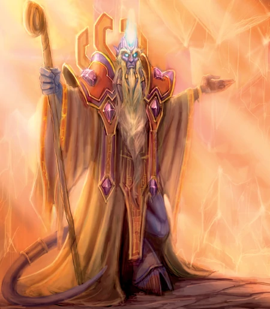Vinte e cinco mil anos antes da chegada dos Orcs a Azeroth, os eredar, uma raça brilhante com afinidade para a magia, atraíram a atenção de Sargeras para a terra natal deles, Argus. O Titã Caído ofereceu conhecimento ilimitado e poder além da imaginação para os três líderes dos eredars – Kil'Jaeden, Arquimonde e Velen – em troca de uma lealdade inquestionável. Segundo sua apresentação, como ser benevolente, Sargeras convidava os Eredars para participar de uma suposta "cruzada que uniria todos os seres do universo". Porém uma visão perturbadora veio ao Profeta Velen. Através de seus poderes proféticos unidos à mensagem enviada por um ser de luz (mais tarde apresentado como K'ure), viu os eredars transformados em impronunciáveis demônios, futuros líderes do exército de Sargeras, que iria crescer até proporções colossais e dizimaria toda a vida que encontrasse, praticando uma Cruzada Ardente.
Apesar das tentativas de Velen de alertar seus amigos, Kil'Jaeden e Archimonde decidiram aceitar a oferta de Sageras. Velen desesperou-se com a decisão de seus antigos companheiros e então rezou por ajuda. Para a sua surpresa e alívio, suas preces foram respondidas pelos benevolentes naarus. Esses seres de energia haviam, assim como Velen, previsto o mal que seria causado pelo Titã Caído.
Os naarus ofereceram-se para guiar Velen e quaisquer outros crentes até um local seguro. Velen quietamente reuniu aqueles entre os seus seguidores eredars que pareciam confiáveis e os batizou de “draeneis” (que em eredun significa “os exilados”). Os draeneis conseguiram escapar por pouco, antes que Sargeras voltasse para cumprir sua promessa. Furioso pela "traição" de seu antigo companheiro, Kil'Jaeden jurou perseguir Velen e seus seguidores draeneis até os confins da existência.
Quando Sargeras voltou para Argus ele transformou os eredars em demônios: Sargeras escolheu seus dois campeões para comandar seu exército demoníaco de destruição: Kil'Jaeden, o Enganador, que foi escolhido para procurar as raças mais sombrias do universo e as recrutar para servir ao titã, e Archimonde, o Profanador, que foi escolhido para conduzir os vastos exércitos de Sargeras em batalha contra qualquer um que resistisse à Legião Ardente.
O primeiro movimento de Kil'Jaeden foi escravizar os vampíricos Nathrezim sob de seu terrível poder. Os Lordes do Horror serviram como seus agentes pessoais ao longo do universo, deleitando-se em prazer ao localizar e subjugar raças primitivas para seu mestre corromper. O primeiro entre os Lordes do Horror era Tichondrius, o Senhor das Trevas. Tichondrius, apoiado pelos seus dois irmãos; Anetheron, segundo-no-comando e Mephistroth, terceiro-no-comando; serviu Kil'Jaeden como um soldado perfeito e concordou em levar em nome de Sargeras o testamento ardente para todos os cantos escuros do universo.
O poderoso Archimonde também escolheu seus agentes. Chamando os maléficos Senhores do Abismo e seu líder bárbaro, Mannoroth, o Destruidor. Archimonde queria criar uma elite lutadora que expurgaria a criação de toda a vida.
Assim que os exércitos de Sargeras foram recrutados e estavam prontos para seguir seu comando, ele lançou suas forças enfurecidas na imensidão da Grande Escuridão. Ele batizou o seu exército de Legião Ardente. A partir desta data ainda obscura, eles consumiram e queimaram tantos mundos quanto possível na sua profana Cruzada Ardente pelo universo.
A Guerra dos Anciões

A irresponsabilidade dos Quel'Dorei viria a trazer graves consequências. O abuso da poderosa magia da Nascente da Eternidade foi captada e descoberta por mentes demoníacas. Sargeras, logo se apressou a descobrir a origem de tamanho poder, o que não foi difícil, encontrando o mundo de Azeroth, e ali, a fonte de toda a magia, a Nascente da Eternidade. De imediato, Sargeras criou dentro de si, um desejo descontrolado de absorver toda aquela magia para si.
Sargeras rumou a Azeroth seguido pela sua Legião Ardente, um exercito de milhões de demônios caóticos, vindos dos confins do universo. Archimonde e Mannoroth prepararam os seus guerreiros e atacaram. Azshara, atraída pelo poder mágico de Sargeras, abriu as portas ao seu mundo e os Quel'Dorei, corrompidos pela magia tomaram Sargeras como o seu deus. Para demonstrar a sua fidelidade, Azshara e os Quel'Dorei abriram um Portal Mágico dentro da Nascente da Eternidade. No momento mais propício, Sargeras iniciou a carnificina em Azeroth. A Legião Flamejante arrasou com as cidades dos Kaldorei e os feiticeiros Man'ari Eredar invocaram os Infernais, gigantes de pedra e chamas verdes que chegaram às terras de Kalimdor como meteoros. Os demônios avançaram sem problemas e os elfos noturnos, embora tenham defendido o seu território, foram forçados a recuar perante a Legião.
Malfurion Stormrage escapou para ajudar os sobreviventes. O seu irmão gêmeo, Illidan Stormrage, apesar de não ser Quel'Dorei, foi instruído a usar a magia do lago. Malfurion convenceu o seu irmão que eles deviam deixar as práticas mágicas e ambos escaparam com a sacerdotisa Tyrande Whisperwind. Ambos os irmãos se apaixonaram pela bela sacerdotisa, mas Tyrande só correspondeu a Malfurion. Illidan sentia remorsos por isto, mas a dor do seu coração não teve comparação com a sua necessidade por magia. Illidan sofria da mesma sede mágica que os Quel'Dorei e pensou que usando a energia do lago contra a Legião, poderia derrota-la. Illidan e os seus seguidores formaram uma seita de guerreiros, conhecidos como os Caçadores de Demônios, que arrancavam os olhos para usar todo o seu potencial mágico. Malfurion nunca perdoou Illidan por se tornar o líder dos Caçadores de Demônios, mas Illidan não se preocupou com isto, ele só queria impressionar Tyrande.
Cenarius que surgiu para ajudar os Elfos, pediu ajuda aos dragões. Em pouco tempo Alexstrasza, a Dragão Vermelha, atacou os demônios. Cenarius chamou os espíritos ancestrais das florestas e Treants, os homens-árvore. Malfurion, Illidan e Tyrande levaram a cabo um contra-ataque furioso. Illidan avançou contra os demônios, até que acabaram por enfrentar Azzinoth, capitão dos exércitos de demônios. Illidan derrotou Azzinoth e cortou as suas espadas curvadas (Que eram extensões dos seus braços) usando-as como troféu.
Os aliados dos Elfos Norturnos chegaram ao Templo de Azshara e a Nascente da Eternidade. Malfurion soube que as suas forças não erradicariam a presença do inimigo. Enquanto a batalha se tornava mais sangrenta a cada segundo, Azshara esperava ansiosa a chegada de Sargeras. Como o cavaleiro da Legião era demasiado grande para entrar no portal, Azshara enviou alguns de seus Quel'Dorei para o lago, de forma que eles aumentassem o portal. Mannoroth, general dos exércitos demoníacos defendia a entrada do templo, Cenarius e as forças da floresta distraiam-no, para que Malfurion, Tyrande e os seus guerreiros pudessem entrar no templo.
Porém, um evento terrível mudou os planos. O dragão negro, Neltharion, ficou louco durante a batalha e traiu os seus irmãos ao abandonar a batalha. O seu lado obscuro revelou-se e foi rebatizado como Asa da Morte. Envergonhados, os outros dragões tiveram de sair da batalha também. Malfurion ficou sem esperança ao perder os seus maiores aliados. Convencido de que a Nascente da Eternidade era a ligação ao seu mundo para os demônios, Malfurion decidiu que era necessário destruí-la, horrorizando a maioria dos Elfos Noturnos, ja que aquela era a fonte da sua imortalidade, mas incentivados por Tyrande aceitaram a ideia de Malfurion, e decidiram atacar o palácio de Azshara e destruir o lago para salvar Kalimdor.
O Rompimento
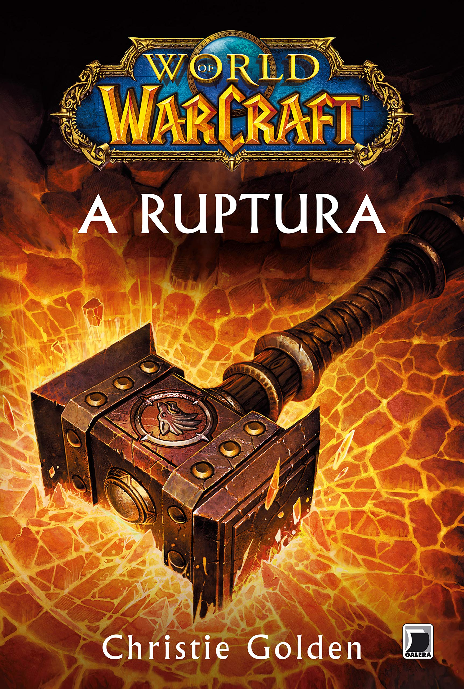Malfurion e Tyrande atacaram o palácio de Azshara para tentar impedir a chegada de Sargeras. Mas Azshara estava preparada e os guerreiros de Malfurion foram capturados. Tyrande foi capturada pelos Quel'Dorei quando tentou atacar Azshara por trás e sofreu ferimentos sérios. Malfurion entrou em cólera e decidiu acabar pessoalmente com a rainha. Para sua surpresa, apereceu Illidan, tentando convencê-lo que a destruição do lago o privaria da pratica de magia, mas como o seu irmão não lhe deu atenção, Illidan advertiu os Quel'Dorei das intenções de Malfurion. Illidan não sentiu remorsos ao trair o irmão. Finalmente, ele guardou um pouco das águas do lago num frasco especial, para usar mais tarde, sabendo que a Legião Ardente destruiria a sociedade élfica.
Azshara, prevenida por Illidan, começou uma batalha épica contra Malfurion, que estava disposto a dar a sua vida na luta. Mas o portal que os Quel'Dorei estavam aumentando tornou-se instável ao ser atacado e isto causou uma explosão terrível de magia. Tão forte foi a explosão que destruiu as bases do templo e abriram a terra. A Nascente da Eternidade desmoronou entre os elfos e os demônios.
O Presente de Illidan
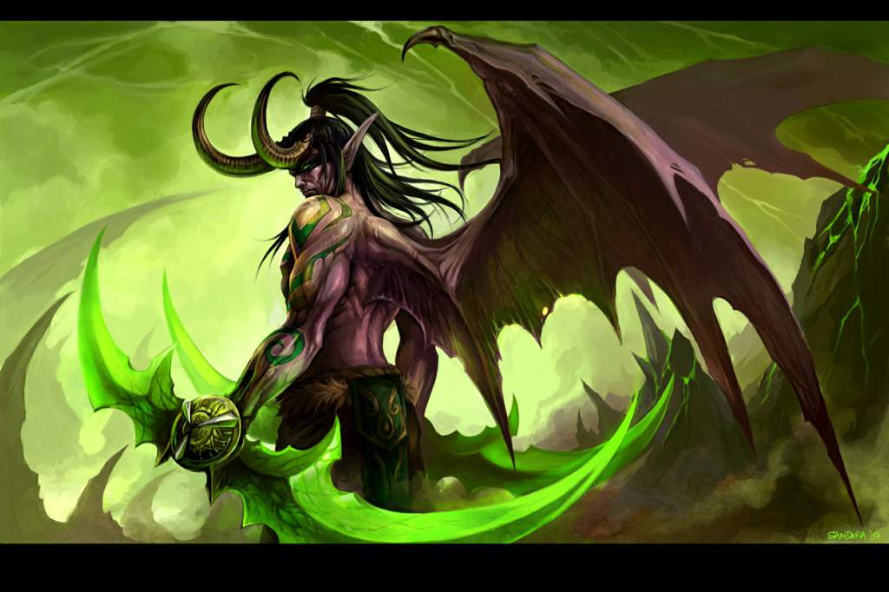Tyrande e Malfurion foram salvos por Cenarius. Ambos guiaram os poucos Elfos Noturnos que sobreviveram para terras novas onde viriam a construir uma nova casa. Sargeras e a Legião Ardente, tinham sido banidos pelo colapso da Fonte, mas a um preço terrível.
Os Kaldorei perceberam que muitos Quel'Dorei tinham sobrevivido, unindo-se aos Kaldorei para procurar uma casa nova.
Muitos ficaram contentes ao descobrir que o Monte Hyjal e a floresta Vale Gris, a casa de Cenarius, tinham sobrevivido. Procurando uma casa nova, Malfurion e os Kaldorei subiram a montanha e ao chegar ao vale, encontraram um lago. Um dos Quel'Dorei correu para as águas do lago com grande excitação. Mas para o horror de todos, as águas do lago exalavam energia mágica.
Illidan, que estava à frente de Malfurion, esvaziou os seus frascos na água, tentando manter o fluxo mágico, e formar uma nova Nascente da Eternidade. Acreditava estar fazendo o mais correto ao formar uma nova Fonte para fornecer magia à sociedade élfica do futuro, mas Malfurion não concordou e os gêmeos enfrentaram-se novamente.
Com ajuda de Cenarius, Malfurion prendeu o irmão numa prisão subterrânea. Para se assegurar que Illidan não escaparia, Malfurion procurou uma guardiã, Maiev Shadowsong, e ela ficou encarregada de guardá-lo.
Temendo que ao destruir a nova Nascente da Eternidade causariam outro cataclisma, os Elfos Noturnos decidiram não o fazer. Começaram a estudar as artes druídicas para curar a terra e recuperar as suas florestas.
A Árvore do Mundo
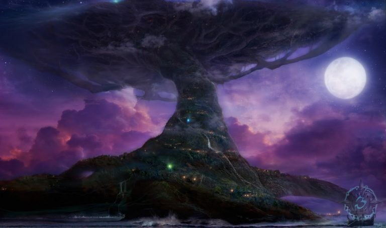Os elfos reconstruíram as suas casas ao redor do monte Hyjal, sempre em busca da harmonia com a natureza.
9.000 anos antes da Primeira Guerra de Azeroth, os dragões sobreviventes surgiram novamente. Alexstrasza, Ysera, Malygos e Nozdormu chegaram as terras dos druidas e encontraram-se com Malfurion que se tinha tornado Arquidruida Malfurion recebeu os dragões e falou com eles sobre a nova Fonte da Eternidade. Os dragões estavam alarmados e deduziram que esta nova Fonte atrairia novamente a Legião Ardente. Malfurion e os Quatro Aspectos decidiram fazer algo, e os quatro dragões deram parte do poder deles para criar o Alma Dragônica cujos poderes infligiriam dano à Legião Flamejante no caso de um novo ataque. Porém, Neltharion, o Dragão Negro, não deu nada do seu poder, e permaneceu como o mais poderoso dos dragões.
Alexstrasza plantou uma semente no fundo da Fonte. Ativada pela magia das águas, a semente tornou-se uma imensa árvore que absorveu todas as águas da Fonte. Esta nova árvore simbolizaria a união dos Elfos Noturnos com a natureza. A árvore recebeu o nome de Nordrassil. Nozdormu armou a Grande Árvore para prover os elfos de imortalidade e Ysera conectou a Árvore com o seu Reino onírico, o Sonho Esmeralda. Desta forma regularia o avanço da natureza e a evolução do mundo.
Os Elfos Noturnos druidas, incluindo Malfurion, uniram-se a Ysera no Sonho Esmeralda, e fizeram-no de bom grado, apesar de saberem que perderiam grande tempo das vidas deles durante a hibernação.
As Tribos
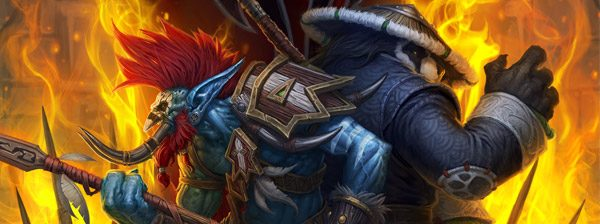Embora os Kaldorei tenham alcançado um grande conhecimento, eles só mais tarde se encontraram com outras culturas inteligentes. Muito antes do colapso da primeira Fonte da Eternidade, no leste surgiu uma cultura que criou um imenso império. Mil anos antes dos Kaldorei aparecerem, dois impérios enfrentaram-se. Existiam duas Tribos nas terras do norte onde depois seria chamada de Lordaeron : a Tribo Gurubashi e a Tribo Amani que construiu Zul'Aman. Suspeita-se que ambas as tribos tenham vindo do vale de Stranglethorn.
Embora fossem todos Trolls, eles não se tratavam com muita condolência. Porém, tiveram que se unir contra os insetos do Império Azi'Aqir que destruiam tudo aquilo que não fosse insetóide. Finalmente os insetos foram neutralizados em Azjol'Nerub, para o norte, e em Anh'Qiraj, para o sul.
Algumas Tribos acharam a Fonte da Eternidade e usaram-na para os próprios fins (é possível que os Kaldorei descendam dessas Tribos). Os Elfos e os Trolls enfrentaram-se várias vezes, mas no fim os elfos expulsaram as tribos.
Os Trolls da Floresta adoravam Hakkar, um deus violento. Hakkar exigia as almas das crianças troll. Alguns Trolls recusaram isto e pararam de adorá-lo, causando a sua raiva. Só a tribo Atal'Ai continuou a adorar Hakkar. Por esse motivo os Gurubashi expulsaram-nos e foram forçados a emigrar para o Pântano das Lamentações, entrando numa guerra tribal.
As tribos Skullspliter e de Darkspear lutaram até a morte pelo domínio. A superioridade do Skullspliter forçou os Darkspear a abandonar o continente. Exílados, foram para uma ilha do Grande Mar que eles habitaram dali em diante.
Enquanto os Elfos reconstruíam as vidas deles ao redor do monte Hyjal, os Atal'Ai continuaram com a adoração de Hakkar. Esta ameaça alertou Ysera que enviou uma de suas crianças, Eranikus, para os advertir do perigo, mas os feiticeiros Atal'Ai estavam obstinados em invocar Hakkar. Então Ysera apareceu diante dos Atal'Ai e afundou a fortaleza deles, formando a Sepultura das Lágrimas. Hakkar vingou-se corrompendo Ysera com o seu poder. Os Grandes Aspectos, temendo perder outro dos irmãos, limitaram Ysera no Sonho Esmeralda para evitar que a corrupção se espalhasse e pediram aos druidas que mergulhassem no Sonho Esmeralda, pois Ysera necessitava de apoio.
Neltharion vendo a oportunidade, se aproveitou da situação e usou a Alma Dragônica para destruir os Dragões Azuis. Malygos, só e sem herança, viajou para o gélido continente de Northrend e fez um cemitério para as suas crianças, o Dragonblight. Levou consigo Sapphiron, o seu servo sobrevivente, e deu-lhe a missão de vigiar o Dragonblight.
Alexstrasza, ciente do uso feito por Neltharion da Alma Dragônica, escondeu-a nas profundezas das montanhas de Khaz Modan.
O exílio dos Quel'dorei

Os elfos expandiram-se nas florestas de Ashenvale e ajudaram raças diversas que também quase se extinguiram depois do colapso da Fonte. Debaixo do controle dos druidas, os elfos levavam uma vida calma.
Porém, os Quel'Dorei sobreviventes viviam inquietos. Tal como Illidan, cairam numa depressão enorme por não poderem usar os seus poderes mágicos. Eles foram tentados a estudar a energia da Fonte e usar magia novamente. Dath'Remar Sunstrider, o líder do Highborne começou a se opor aos druidas e acusou-os de covardia por rejeitarem a magia. O druidas advertiram que o uso da magia seria castigado severamente. Numa tentativa de convencer os druidas que deveriam usar magia, Dath'Remar e os Quel'Dorei chamaram uma tempestade para assolar Ashenvale mas não foi o suficiente.
Como consequência, os druidas decidiram conceder-lhes o exílio. Dath'Remar Sunstrider e os seguidores dele estavam contentes face à ideia de se separarem dos druidas. Construíram navios para cruzar o Grande Mar e fundar a sua própria nação onde poderiam praticar a magia livremente. Acabaram por chegar às terras que posteriormente seriam chamadas de Lordaeron e instalaram-se numa terra a norte de lá, a qual batizaram de Quel'Thalas. Eles recusaram os modos de vida noturnos dos Kaldorei, e decidiram fazer a vida de dia. Passaram a ser conhecidos como Altos elfos.
As Sentinelas
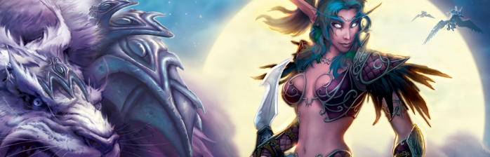Depois da partida dos Quel'Dorei, os druidas, incluindo Malfurion, sentiram-se prontos para entrar no Sonho Esmeralda. Os Kaldorei selaram as fronteiras de Ashenvale com um encantamento que os afundaria num mistério profundo. Os Elfos Noturnos permaneceram fechados sem ter contato com outras raças ou culturas.
Os druidas deixaram para trás as vidas deles para se unirem a Ysera no Sonho Esmeralda. Tyrande pediu a Malfurion que não o fizesse, mas Malfurion sentia-se moralmente forçado a entrar no Sonho Esmeralda, e fazia-o com prazer. Ele disse a Tyrande que nada poderia separá-los e então entrou no sonho Esmeralda.
Tyrande, agora Alta Sacerdotisa, junto das suas irmãs elfas noturnas, tornaram-se Sentinelas cuja missão seria proteger Kalimdor e guardar as florestas de Ashenvale. Elas tiveram a ajuda de Cenarius e das suas crianças, os guardiães das florestas e suas filhas, as dríades.
Porém, sem Malfurion ao seu lado, Tyrande temeu sempre uma segunda invasão por parte da Legião Flamejante.
O Mundo Novo de Azeroth
Quel'Thalas
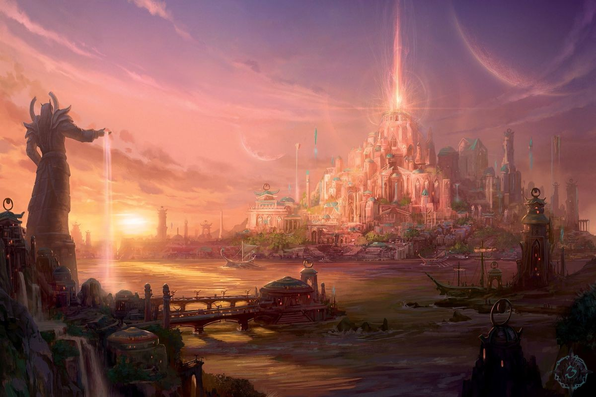A viagem dos Quel'Dorei foi complicada. Desde que tinham perdido o contato com a Fonte da Eternidade, tinham ficado doentes e envelhecido, a pele deles ficou branca e os seus cabelos ficaram loiros. Eles encontraram criaturas que nunca viram, como Humanos, que viviam em tribos. Mas o desafio maior eram os Trolls de Zul'Aman.
Estes Trolls formaram o Império Amani e tinham a seu favor a incrível capacidade de regenerarem as feridas mais terríveis. Provaram ser uma raça terrível e hostil para tudo aquilo que passasse no território deles.
Os High Elves atacaram os Trolls com magia, mas muitos temeram chamar atenção da Legião Ardente. Para evitar isso, foram construídos monólitos de runas ao redor de Quel'Thalas. Estes monólitos eram na verdade uma barreira mágica que esconderia o uso da magia. A barreira também afugentou os supersticiosos Trolls.
Foi construído em Quel'Thalas, um monumento ao progresso dos High Elves. Foi fundado o conselho de Silvermoon para governar a região, mas a dinastia dos Sunstrider seria sempre quem levaria as rédeas de Quel'Thalas. O conselho, composto por sete Elfos, regia as leis e as terras do império. Protegidos pela barreira, os High Elves esqueceram as advertências dos Kaldorei e continuaram a usar magia para quase tudo. No centro de Silvermoon criaram o Sunwell, com águas provenientes da primeira Fonte da Eternidade.
Os Humanos e as Guerras dos trolls
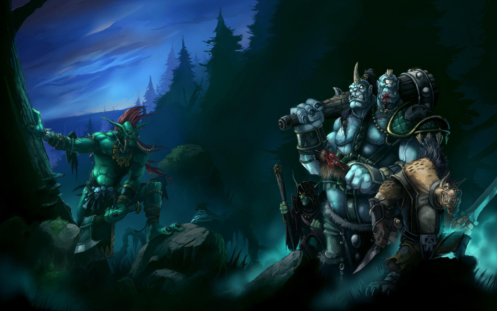Os Trolls eram uma ameaça, e as tribos nômades de homens uniram-se numa só, a grande tribo Arathi. A grande tribo Arathi queria enfrentar com valor e determinação os trolls e estabelecer o seu próprio território tribal. Por essa razão, os Arathi enfrentaram e derrotaram pequenas tribos rivais Humanas, para que assim pudessem focar seus verdadeiros inimigos e estabelecerem uma forte nação de paz e igualdade. Deste modo aconteceu e os Arathi tornaram-se grandes, conseguindo aguentar os ataques dos trolls. Decidiram construir uma cidade fortaleza, ao Sudeste de Lordaeron. A nação Arathi passou a ser chamada de Arathor, e a cidade fortaleza, Strom. Debaixo da mesma bandeira, os Humanos criaram uma cultura forte. O Rei Thoradin, soube da existência dos Elfos do Norte e dos ataques constantes que estes sofreram por parte dos trolls. As defesas dos Elfos estavam falhando. Estes, desesperados, prometeram ensinar magia a alguns Humanos em troca do apoio militar para que pudessem fazer frente aos trolls. Com isso os Elfos acabam descobrindo algo curioso sobre os Humanos. Alguns deles tinham uma facilidade inata para dominar a magia.
Cem homens foram ensinados nas artes mágicas dos Elfos. Não mais que o necessário para enfrentar os trolls. Acompanhados pelos aliados Humanos os Elfos partiram para o Norte.
Os exércitos de Elfos e Humanos entraram fortemente contra os trolls nas montanhas de Alterac. Os Elfos abateram toda a sua furia nos trolls e os Humanos atacaram com todas suas forças. Fizeram cair o fogo dos céus nos trolls para não deixar que as feridas se curassem. Os trolls não pereceram, mas a história deste mundo não voltaria a contemplá-los novamente como um grande império. Por outro lado, Elfos e Humanos se aliaram e com um juramento de eterna lealdade, prosperaram juntos.
Os Guardiões de Tirisfal Glades
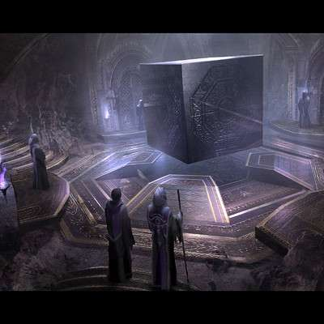Com o passar dos anos, o Rei Thoradin morreu e deixou para seus sucessores uma nação próspera que veio a se ampliar além das paredes de Strom.
Os cem mágicos originais estudaram as habilidades deles e eles os aperfeiçoaram. Estes mágicos tinham cuidado e responsabilidade com o uso da magia, mas ao passar estes conhecimentos para as próximas gerações, os segredos mágicos começaram a ser usados sem cuidado. Com a evolução de suas habilidades, estes acabaram se tornando isolados da sociedade.
Uma cidade nova, Dalaran, foi fundada ao Norte de Strom. Muitos mágicos viajaram a Dalaran, onde eles mergulharam no estudo da magia. Os mágicos Humanos aprenderam a invocar temporais e chuvas, teletransportarem-se de um lugar para outro, ficarem invisíveis, mudar a forma dos animais, e aprenderam também a invocar forças elementais da água e os usar como aliados. Dalaran cresceu aceitando e admirando o poder dos magos, porém, um poder escondido assistia os humanos.
Alguns demônios da Legião que foram expelidos depois da explosão Fonte da Eternidade, acabaram sendo atraídos pela forte e constante magia de Dalaran, que tinha quebrado as barreiras efêmeras entre o mundo físico e os mundos etéreos. Estes demônios não vieram a se tornar uma grande ameaça, mas eles fizeram caos nas ruas de Dalaran. Os magos de Dalaran esconderam a existência de demônios ao público.
As pessoas começaram a suspeitar que algo acontecia. Os aparecimentos de criaturas demoníacas e assassinatos estavam causando pânico entre os habitantes de Dalaran. Os magos, temendo uma revolução, pediram ajuda aos High Elves. Os Elfos concluíram que se tratava apenas de alguns demônios perdidos pelo mundo, mas eles também notaram que se os homens de Dalaran continuassem usando magia naquele ritmo, a Legião poderia retornar.
Os Elfos alertaram e informaram aos mágicos Humanos sobre a história de Kalimdor e a Burning Legion. Sendo assim, os magos determinaram a necessidade de se criar um grupo de peritos na magia, e dentre eles, aquele que seria capaz de se tornar o grande campeão, um guardião que enfrentaria a Legião em uma cruzada secreta.
Reuniões se acalmaram em Tirisfal e eles criaram a seita de Guardiões de Tirisfal. Os Guardiões escolhidos seriam saturados com os elfos de poderes mágicos e humanos. Só haveria um Guardião por tempo, mas eles teriam um grande poder para lutar contra a Legião. Quando um guardião envelhecia muito, um Guardião novo era escolhido para lutar contra a Legião. Durante gerações, os Guardiões defenderam as terras de Quel'Thalas e Arathor, enquanto o uso da magia aumentou o império humano.
Ironforge e os Anões
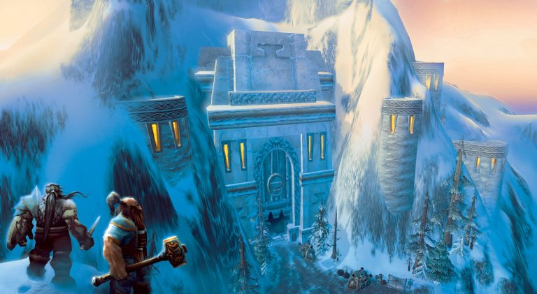Após a partida dos Titãs, os "titanides" continuaram com sua tarefa de formar o interior do mundo. Os titanides jamais se preocuparam com os assuntos das raças da superfície, e só cuidaram dos problemas que se referiam aos escuros abismos da terra. Após a implosão da "Fonte da Eternidade", os titanides foram afetados. Sofreram muita dor, e se uniram às rochas das quais eles foram feitos. Uldaman, Uldum e Ulduar foram as cidades dos titanides, onde eles dormiram em paz durante 8.000 anos.
Não está claro por que despertaram, mas enquanto dormiram seus corpos mudaram. A rocha de seus corpos tornaram-se carne, e seus poderes sobre as pedras desapareceram, voltaram a ser mortais.
Os titanides deixaram as covas de Uldaman e se aventuraram pela superfície. Construíram uma cidade abaixo da mais alta das montanhas, chamaram esta terra de "Khaz Modan" e fundaram uma poderosa forja dentro da montanha. À cidade que surgiu ao redor da forja deram o nome de Ironforge. Desde então deixaram de ser titanides para serem anões. Os anões, fascinados em suas tarefas de mineração não se preocuparam com os problemas de seus vizinhos.
Sete Reinos

Strom continuou agindo como a capital de Arathor, mas assim como Dalaran, muitas novas cidade-estado surgiram no continente de Lordaeron. Gilneas, Alterac, e Kul Tiras foram as primeiras cidade-estado a surgirem, e apesar de cada uma delas terem seus próprios costumes e comércios, todas elas mantinham a autoridade unificada de Strom.
Sob o olhar vigilante da ordem de Tirisfal, Dalaran se tornou o centro de aprendizagem para magos por toda a terra. Os "Magocratas" que regiam Dalaran fundaram o Kirin Thor, uma seita especializada cuja função era catalogar e pesquisar cada magia, artefato, e item mágico conhecido pelos humanos naquele tempo.
Gilneas e Alterac se tornaram fortes apoiadores de Strom e desenvolveram poderosos exércitos que exploraram as terras montanhosas de Khaz Modan ao sul. Isso foi durante esse período que os humanos se encontraram pela primeira vez com a antiga raça dos anões e viajaram por sua cavernosa cidade subterrânea, Ironforge. Os humanos e os anões compartilharam muitos segredos sobre forja de metais e engenharia, e descobriram um comum amor pela batalha e contos de histórias.
A cidade estado de Kul Tiras, fundada sobre uma grande ilha ao Sul de Lordaeron, desenvolveu uma próspera economia baseada na pescaria e entrega. Depois de um tempo, Kul Tiras construiu uma poderosa frota de navios mercantes que viajavam pelas terras conhecidas em procura de bens exóticos para trocar e vender. Mesmo com a economia de Arathor crescendo, seus mais fortes elementos começaram a desintegrar.
Com o tempo, os lordes de Strom procuraram mover seus estados para as produtivas terras ao norte de Lordaeron e deixar as terras áridas do sul. Os herdeiros do rei Thoradin, os últimos descendentes da linhagem sanguinea dos Arathi, argumentaram que Strom não devia ser abandonada e desta maneira causou o descontentamento da maioria dos cidadãos, que estavam igualmente ansiosos para partir. Os lordes de Strom, tentando encontrar pureza e iluminação nas terras selvagens do norte, decidiram deixar sua antiga cidade para trás. Longe ao norte de Dalaran, os lordes de Strom construíram uma nova cidade-estado a qual eles chamaram Lordaeron. O continente inteiro veio a ter o mesmo nome desta cidade-estado. Lordaeron se tornou um meca para viajantes religiosos e todos que procuravam paz interior e segurança.
Os descendentes dos Arathi, deixados entre as paredes em ruínas da antiga Strom, decidiram viajar para o sul passando pelas montanhas rochosas de Khaz Modan. A jornada deles finalmente chegou a um fim depois de muitas longas estações, e eles colonizaram a região no extremo norte do continente que eles chamariam de Azeroth. Em um vale fértil eles fundaram o reino de Stormwind, que rapidamente se tornou um poder auto-suficiente por conta própria.
Os poucos guerreiros ainda deixados em Strom decidiram permanecer e guardar os antigos muros de sua cidade. Strom não era mais o centro do império, mas se desenvolveu em uma nova nação conhecida como Stromgarde. Apesar de cada uma das cidades-estado se tornarem prósperas por conta própria, o império de Arathor havia efetivamente se desintegrado. Conforme cada nação desenvolveu seus próprios costumes e crenças, elas se tornaram cada vez mais segregadas umas das outras. A visão do rei Thoradin da unificação da humanidade havia desaparecido no fim.
A Caça ao Dragão

Enquanto o Reino humano se separava, os Guardiões permaneceram em vigilância constante. Havia uma Guardiã que era distinta dos outros como uma grande lutadora contra as trevas, a Grande Aegwynn. Aegwynn procurou pessoas para ajudá-la a caçar todos os demônios onde eles os acharam, mas em ocasiões questionou a autoridade do Conselho de Tirisfal, dominada por homens. Aegwynn pensou que os doentes e os homens velhos do conselho não tinham força para dominar as trevas. Cansada pelas discussões longas e debates, Aegwynn demonstrou um valor além da compreensão em situações cruciais.
O domínio deles no poder de Tirisfal cresceu e Aegwynn terminou por descobrir que um numeroso grupo de demônios estava se aproximando do continente frio de Northrend. Aegwynn viajou até o continente de gelo e eles acharam os demônios entre as montanhas. Eles descobriram que os demônios tinham caçado um dos sobreviventes dos últimos dragões, absorvendo a magia ancestral dele. Os seguidores poderosos de Malygos o tecedor de encantamentos, e os dragões azuis, tinham decidido combater os poderes da Legião, antes do aumento das sociedades mortais no mundo. Aegwynn enfrentou os demônios, e com ajuda dos dragões, os derrotou.
Mas assim que o dragão desapareceu do mundo, uma tempestade terrível tremeu os céus do norte e Sargeras emergiu em Northrend. Sargeras disse a Aegwynn que o tempo de Tirisfal havia acabado, e que o mundo chegaria a seu fim, devorado pela Legião.
Aegwynn atacou o titã caído, e acabou com a forma física de Sargeras com facilidade alarmante. Aegwynn puxou o corpo de Sargeras para uma das salas de estar velhas de Kalimdor que estava perto do ponto onde a Fonte da Eternidade ficava, no centro do Grande Mar. Aegwynn não suspeitou que aquele era o plano de Sargeras.
A Guerra dos Três Martelos

Em Ironforge, os anões viveram em calma durante muitos séculos. Enquanto o rei Modimus Anvilmar reinou com valor, três facções anãs estavam ganhando popularidade. O Clã Bronzebeard, defensores de Ironforge, conduzidos pelo rei Madoran Bronzebeard; o Clã Wildhammer, conduzido pelo rei Khardos Wildhammer, que habitava as minas e a base da montanha e que desejava mais poder dentro da cidade; e o Clã Ferro Negro (Dark Iron), conduzido pelo rei Thaurissan, O Encantador. Os anões do clã Ferro Negro habitavam as sombras abaixo das montanhas e conspiravam contra os outros dois clãs.
Quando o antigo grande rei, Modimus Anvilmar, morreu por sua idade avançada, a disputa pelo poder havia explodido e a guerra civil anã tremeu em Ironforge durante muito tempo. Entretanto, após severas batalhas, os Bronzebeards conseguiram expulsar os Wildhammers e os Ferro Negro para longe de Ironforge. Os Wildhammers viajaram ao norte e eles construíram o próprio Reino deles, Batol Severo. Os Ferro Negro não tinham assim nenhuma sorte e, humilhados, eles juraram vingança contra Ironforge. Os Ferro Negro viajaram ao sul e eles fundaram a cidade de Thaurissan, como seu líder, debaixo do Montanhas de Redridge. O passar dos anos enfraqueceu a raiva dos Ferro Negro, e Thaurissan proclamou as terras de Khaz Modan só para seu clã, assaltando Ironforge e Batol Severo.
Thaurissan assaltou Ironforge, enquanto sua esposa, Mogdud atacou Batol Severo. Os dois líderes do Ferro Negro quase alcançaram seu objetivo, mas Madoran Bronzebeard levou seu clã para uma vitória decisiva sobre o exército de feiticeiros de Thaurissan. Thaurissan e seus servos fugiram de volta para a segurança de sua cidade, sem saber dos eventos que ocorria em Grim Batol, onde o exército de Modgud se sairia melhor contra Khardros e seus guerreiros Wildhammer. Modgud usou seus poderes para dar medo nos corações dos guerreiros Wildhammer, sombras movidas em seu comando, e a escuridão vinham das profundezas da terra para perseguir os Wildhammers em seus próprio salões. Eventualmente Modgud rompeu os portões e sitiaram a fortaleza. Os Wildhammers lutaram desesperadamente, o próprio Khardros atravessou pela batalha para matar a rainha feiticeira. Com sua rainha perdida, os Ferro Negro fugiram diante da fúria dos Wildhammers, eles correram em direção ao sul para fortalecer o exercito do seu rei em Ironforge, mas apenas encontraram os exércitos de Ironforge, que tinha vindo para ajudar Grim Batol. Esmagado entre dois exércitos, as forças de Ferro Negro restantes foram totalmente destruídos. Com os exércitos de Ironforge e Batol Severo unidos, o Bronzebeard e o Wildhammer marcharam para destruir Tharissan e os Ferro Negro de uma vez por todas. Eles não tinham ido muito longe quando a fúria de Thaurissan resultou em um feitiço de proporções cataclísmicas. Buscando convocar um lacaio sobrenatural que garantiria sua vitória, Thaurissan chamou os antigos poderes que dormiam sob o mundo. Para sua surpresa, e, finalmente, o seu castigo, a criatura que surgiu era mais terrível do que qualquer pesadelo que ele poderia ter imaginado.
Ragnaros o Senhor do Fogo, senhor imortal de todos os elementais do fogo, que havia sido banido pelos Titãs quando o mundo era jovem. Agora, liberado pelo apelo de Thaurissan, Ragnaros irrompeu em ser mais uma vez. O ressurgimento do cavaleiro elementar tremeu as fundações das montanhas de Redridge e criou um vulcão poderoso, conhecido agora como Pináculo da Rocha Negra, região em qual reinaria dali em diante até o dia de hoje, enquanto sujeitando os Ferro Negro sobreviventes à vontade dele.
Aterrorizados pelo poder de Ragnaros, os exércitos de Ironforge e Batol Severo se retiraram para os Reinos deles. Quando o Wildhammers chegou a Batol Severo que eles descobriram que a morte de Mogdud tinha tido um efeito mau no Reino e tinha sido inabitável. Antes desta situação, ofereceu o Bronzebeard eu cubro o Wildhammer em Ironforge, eu cubro que o Wildhammer rejeitou. A cidade de Kardros viajou para Lordaeron, para a floresta de Interiores e lá Ninho fundou Cume onde eles foram dedicados para domesticar às torneiras da área.
Ambos Reino manteve relações comerciais e eles prosperaram. Quando Khardros Wildhammer e Madoran Bronzebeard morreram, foram erguidas duas estátuas das figuras deles/delas na fronteira com as terras governadas por Ragnaros, como advertindo do preço que o Ferro Negro pagou pelos crimes deles.
Os Wildhammer tomou a decisão de viver, dali em diante, na superfície.
Tempos Recentes: A Era dos Mortais
O Último dos Guardiões
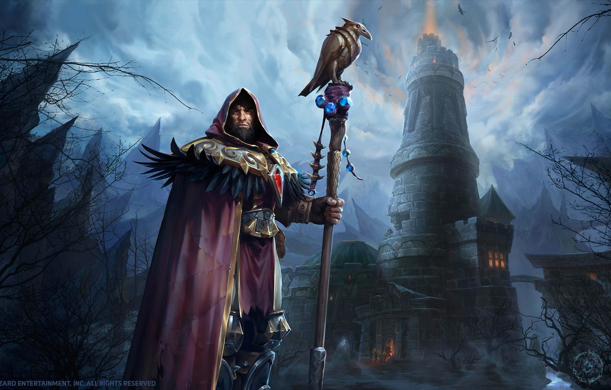Com Sargeras derrotado, Aegwynn continuou protegendo Azeroth por novecentos anos. Até o Conselho de Tirisfal decidir o fim de seu papel como guardiã. Foi forçada a passar seus poderes a um guardião novo, mas Aegwynn decidiu procurar o novo guardião pessoalmente. Aegwynn gerou um filho, Medivh, (o Guardião dos Segredos), que fora concebido de um mágico. À semelhança de seu pai, a magia marcou o menino já antes de nascer. Aegwynn acreditou que Medivh se tornaria o próximo guardião. Mas ela não sabia das verdadeiras intenções de Sargeras. Sargeras possuiu o corpo do Guardião. Medivh estava na realidade possuído pelo grande inimigo de sua mãe. Aegwynn deixou-o sob a custódia de seu pai, como humano, somente seria devolvido a ela quando Medivh fosse considerado merecedor de ser um Guardião. Medivh cresceu sem problemas, estudando as artes da magia gostava de seu pai e da companhia de seus dois melhores amigos, Llane (o príncipe de Azeroth) e Lothar de Anduin, descendente dos dirigentes do Arathi. Mas ao chegar aos 14 anos de vida, o poder escondido de Sargeras acordou e a briga de Medivh para o controle de sua alma o deixou em coma. Ao despertar, era já maduro e Llane e Anduin eram os governantes de Azeroth, e embora ele quisesse proteger Azeroth com seus poderes, Sargeras impediu, o que gerou um resultado terrível. Sargeras dominara Medivh, e seu dominador planejava a conquista e o último dos Guardiões o ajudaria em seu plano demoníaco.
O Pacto de Sangue

De acordo com os criptoglifos da raça Draenei, o eredar demônio, Kil'Jaeden, conhecido como "o Trapaceiro", observava o inocente planeta Draenor das profundezas do Vórtice.
Kil'Jaeden, planejou uma invasão discreta. Ele precisava de um poder forte para destruir tudo antes da Legião.
O objetivo consistiu em debilitar as raças mortais do planeta, antes de dar o sopro de graça com a verdadeira invasão.
Kil'Jaeden, ao contrário de Mannoroth e Archimonde, preferiu uma tática de invasão mais sutil. Baseado na decepção, procurando as fraquezas do objetivo e tirando vantagem destes em próprio benefício.
Em Draenor, habitava uma grande diversidade de raças. O Dreanianos ou Dreanei, desenvolveram uma cultura calma e civilizada, mais avançada que o resto, conhecedores das técnicas de agricultura e desenvolvendo uma tradição mortuária; outra raça, os orcs, foi desenvolvida nas convicções da natureza do álcool. Organizada em clãs, geralmente governados por duas figuras. O primeiro, um chefe que seria o mais forte no clã, o segundo, um xamã, respectivamente, responsável pelo treinamento de jovens e exercendo a função de guia espiritual da cidade. Eles valorizaram uma marca de honra, e ao contrário dos Draenei, os orcs fundaram sua alimentação na base da caça.
Kil'Jaeden, notou que o orcs eram mais suscetíveis que os Draenei e assim mais fáceis de corromper, a anatomia do orcs também era mais favorável para trabalhos de guerra que o do Draenei, assim decantaram mais para a raça da jaqueta de couro, de que para os fazendeiros avançados.
O Trapaceiro falou com a alma de um velho xamã orc, de nome Ner'Zhul e ele lhe prometeu a glória, o poder que nenhuma raça teria, que nunca antes um Dreanor viu e o presente da eternidade. Ner'Zhul, atraído pela oferta do demônio eredar, fez um pacto de sangue com ele. E foi deste modo como Kil'Jaeden, por Ner'Zhul semeou a semente da destruição no coração do orcs, e estes, com o tempo se tornaram os bárbaros sedentos de sangue e destruição. Kil'Jaeden, feliz, começou a observar a caça indiscriminada que o orcs tinham lançado sobre os draenei da cidade. Só alguns poucos draenei, sob o comando do líder Akama, conseguiram escapar do massacre do orcs, escondendo-se em cavernas.
Em uma última ação, Kil'Jaeden propõs para Ner'Zhul , render-se de corpo e alma à guerra. O xamã percebeu então as reais intenções de Kil'Jaeden, e assim soube que os orcs da cidade seriam escravizados, e deu negativo ao demônio. Desagradado pela reação do orc velho, Kil'Jaeden procurou outra marionete que o levou a um orc da cidade a caminho da Legião. O Trapaceiro fixou os olhos dele em um xamã aprendiz e estudante de Ner'Zhul, o orc Gul'Dan. Como ele já havia falado antes a Ner'Zhul, Kil'Jaeden falou a Gul'Dan do poder ilimitado, e prometeu isto a ele em troca de sua obediência cega. Era deste modo como Gul'Dan, seduzido pelas ofertas de Kil'Jaeden, se tornou um estudante aplicado da magia demoníaca, assim o aprendíz de xamã jovem, se tornou o mais poderoso dos professores de feiticeiros famosos da história. Gul'Dan guiou a outro orcs para abandonarem as artes do xamanismo e os levou dar boas-vindas o conhecimento demoníaco da magia de Kil'Jaeden, o poder que os condenaria, a necromancia.
Quando Kil'Jaeden alcançou seus objetivos por Gul'Dan, ele o ajudou a criar o Conselho das Sombras, uma organização sectária de orcs que manipularia os clãs secretamente e estenderia as práticas da necromancia para todos os territórios de Draenor. Deste modo, as terras de Draenor apodrecidas como mais orcs praticaram as bruxas de artes dos demônios.
Em pouco tempo, os campos orcs, ficaram baldios, inférteis e escuros.
A Chegada da Horda em Azeroth
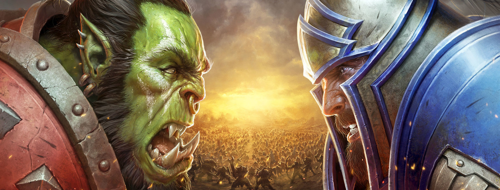Tempos depois da decepção de Kil'Jaeden no clã dos orcs, as batalhas ao redor de Draenor voltaram os orcs uns contra os outros. Sem um inimigo comum, o desejo por destruição levou ao orcs a competir entre eles em testes de força e luta fraticidas. Antes da aprovação desta dinâmica por parte do necromancers, os feiticeiros que estudaram a magia mantiveram o equilíbrio do poder, pensaram que nenhum orc sobreviveria, como eles, Durotan, chefe do Clã Frostwolf, notou que este comportamento acabaria com o orc da cidade. Ninguém escutou, foram proclamados Durotan e outros chefes de clãs mais poderosos, os campeões de guerra.
Os feiticeiros notaram que para avançar no domínio da magia, o orcs deveriam achar um inimigo comum novo. Estava por aquele tempo, quando os feiticeiros notaram da presença de uma fissura interdimensional. Passaram anos estudando os mistérios daquele fenômeno e fazendo ensaios e testes, até que eles notaram que tal uma fissura que você poderia usar como portal para enviar a um clã ao outro lado. Uma força expedicionária entrou em no portal e ao voltar seus orcs irmãos, ficaram furiosos com eles, mas as amostras de plantas que trouxeram, mostraram que as histórias deles estavam corretas.
Três meses depois, sete guerreiros entraram no portal e eles voltaram com relatórios detalhados no mundo do outro lado. Este mundo novo era Azeroth, e o orcs começaram a saquear as aldeias dos humanos. Mas para ter certeza da vitória, o Conselho das Sombras invocou Mannoroth o Destruidor. O Conselho convenceu os chefes de todos os clãs de forma que eles beberam do sangue de Mannoroth, obtendo uma sede de sangue que deste modo os devolveria invencíveis. Todos os chefes dos clãs, com exceção de Durotan, beberam e eles se tornaram os criados de Mannoroth, e estes contaminaram a lealdade ao demônio, deles, para os irmãos do clã.
Com os desejos de destruição renovados pelo sangue de Mannoroth, o orcs apressaram à carga e Gul'Dan que juntou os orcs da cidade em uma Horda dentro da qual os chefes de clãs lutariam entre eles sendo coroados como chefes supremos. Com decepções e manipulações, Gul'Dan alcançou seus planos, e Blackhand o Destruidor, Senhor do Clã Blackrock foi feito com a posição de Senhor da Guerra e dominou a Horda com sua crueldade e seus desejos de poder.
O plano de Blackhand era simples. A unificação de todos os orcs e a destruição absoluta da raça humana do mundo recentemente descoberto de Azeroth. A Horda seria o exército da Legião Ardente e eles tinham dado o passo para começo da Primeira Guerra de Azeroth entre orcs e humanos. Ou o mundo de Warcraft.